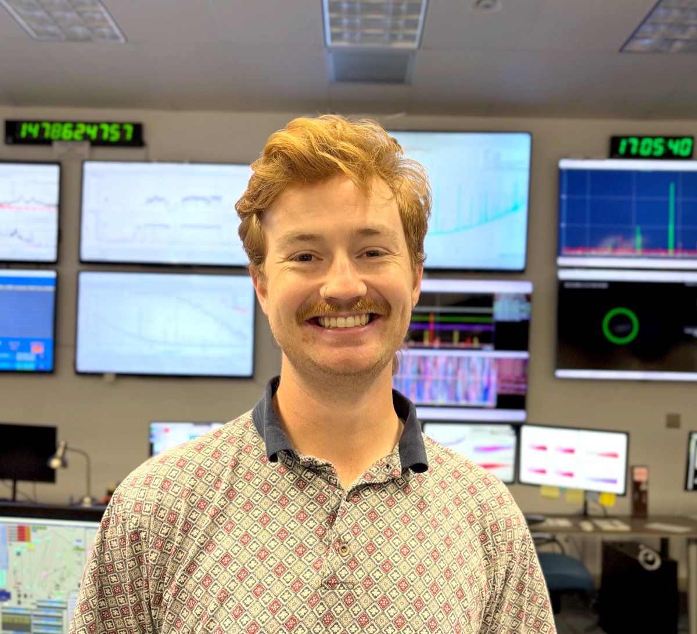

Searches
Finding gravitational waves in low latency
I help develop and operate sgnl, the successor to the GstLAL compact-binary search, running its low-latency analysis to find gravitational-wave signals within seconds of the data arriving.
Gravitational-wave astronomy · LIGO
PhD Candidate, Physics & Astronomy, Louisiana State University
I build low-latency tools that detect gravitational waves and monitor the state of the LIGO detectors in real time. Much of that work is on sgnl, the successor to the GstLAL search, which I help operate as it looks for merging black holes and neutron stars within seconds of the data arriving. My work connects instrumental noise to the significance a search assigns to a candidate signal, so that searches stay sensitive and statistically reliable as the detectors change.
I am a member of the LIGO Scientific Collaboration, advised by Gabriela González. I expect to finish my PhD in summer 2027.

Searches
I help develop and operate sgnl, the successor to the GstLAL compact-binary search, running its low-latency analysis to find gravitational-wave signals within seconds of the data arriving.
Detector characterization
I lead development of sgnax, a streaming pipeline that runs matched-filter and excess-power transient searches on the strain and auxiliary channels at once, on CPUs or GPUs.
Detchar × Searches
My work sits where these two fields overlap. With PINCH, I trace which glitches produce search triggers and where they land in parameter space, and I study how drift in sgnl's noise background changes how significant a candidate looks.
Next
My proposed research is an adaptive noise background that drops disturbances that no longer describe the detector, without losing reliable false-alarm estimates. Read more.